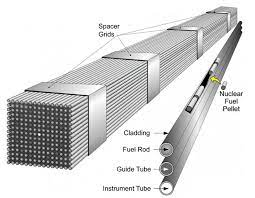
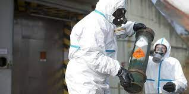

Images/Gallery
When there are such things like a nuclear plant explosion or a dropped atomic bomb where there are mass levels of radiation released,
there is fallout. Fallouts are basically radioactive particles. They can be carried by wind to places far from the explosion site.
Radiation levels decrease significantly within the first 48 hours. So, you can go outside.
But, if you are within a certain radius of the explosion you will have to evacuate.
Here we have few images in relation to nuclear energy, uranium, and protection against radiation.
This is an image of what many nuclear plants look like on the outside.
Through all the smoke they still produce the second to least amount of carbon emissions.

Image of nuclear Reactor. The large tank to the very left is where the uranium is inserted.
This is a pressurized water reactor and not a light water reactor but it is also quite common.
Image of the uranium that is put into the reactors. They are first processed into poles before being used.
Image of protective clothing against radiation. These suits are use by workers who are inside nuclear plants everyday.
Image of an old design for radiation fallout shelters during the cold war. You don't need to build one like this.
But generally, it is good to be underground when there is radiation fallout. Steel is also good at blocking radiation.
Thank you for your time! If you want to ask questions, find my information on the contact page!